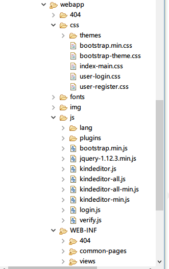

KindEditor 是一套开源的在线HTML编辑器，主要用于让用户在网站上获得所见即所得编辑效果，
开发人员可以用 KindEditor 把传统的多行文本输入框(textarea)替换为可视化的富文本输入框。
KindEditor 使用 JavaScript 编写，可以无缝地与 Java、.NET、PHP、ASP 等程序集成，
比较适合在 CMS、商城、论坛、博客、Wiki、电子邮件等互联网应用上使用。

<link rel="stylesheet" href="css/themes/default/default.css" />
<script charset="utf-8" src="js/kindeditor-min.js"></script>
<script charset="utf-8" src="js/lang/zh_CN.js"></script>
<script>
var editor;
KindEditor.ready(function(K) {
editor = K.create('textarea[name="blogContent"]', {
allowFileManager : true,
resizeType : 1,
width:"100%",
height:"250px"
});
});
</script>
<textarea name="blogContent" id="blogContent" style="width:150px;height:230px;visibility:hidden;" placeholder="在此输入微博正文" class="form-control "></textarea>
预览如图